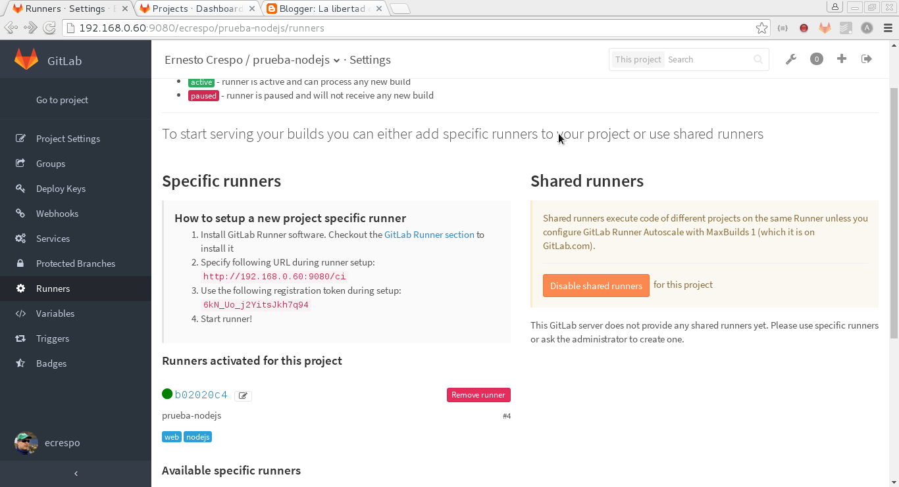

Instalar gitlab-runner de gitlab-ci por medio de Docker
Posted on lun 13 junio 2016 in Tutorial de Docker • 3 min read
En un artículo anterior se explicó como instalar gitlab-ce por medio de Docker (enlace).
El problema es que al gitlab le falta configurar lo de Integración Continua (CI), para ello es necesario instalar gitlab-runner (en el mismo equipo, en otro equipo o como un contenedor aparte).
La descripción sobre las características de gitlab-ci la pueden ver en el siguiente enlace.
La guía para instalar gitlab-runner lo pueden revisar en el siguiente enlace.
Para el caso de docker se puede ver la documentación siguiente.
Los artículos anteriores sobre Docker son:
-
Iniciando Django con docker usando docker-compose con postgresql como microservicio.
-
Crear un entorno de Integración y Despligue continue con Docker para node.js.
-
Ejecutar una prueba de unittest en Python con un contenedor Docker.
-
Montar una Plataforma como servicio (PaaS) con Dokku (docker).
-
Instalar Jenkins por medio de Docker y crear una imagen Docker de Jenkins
-
Crear un contenedor Docker como entorno de desarrollo para Sails.js.
-
Correr aplicaciones de escritorio desde un contenedor Docker.
-
Usar dockerui para la gestión de imágenes y contenedores de Docker
Lo primero que se tiene que hacer es bajar la imagen de Docker para gitlab-runner:
docker pull gitlab/gitlab-runner
Luego se inicia el servicio de registro de gitlab-runner:
docker run -d --name gitlab-runner --restart always -v /srv/gitlab-runner/config:/etc/gitlab-runner -v /var/run/docker.sock:/var/run/docker.sock gitlab/gitlab-runner
De esta forma el gitlab-runner usará el docker que se encuentra en la máquina anfitrión, se tiene acceso a la configuración de gitlab-runner desde la máquina anfitrión.
Al ejecutar un docker ps se tiene lo siguiente:
docker ps
CONTAINER ID IMAGE COMMAND CREATED STATUS PORTS NAMES
13ffb573fadf gitlab/gitlab-runner "/entrypoint run --us" 3 hours ago Up 3 hours gitlab-runner
b483b38fe29e gitlab/gitlab-ce:latest "/assets/wrapper" 12 days ago Up 4 hours 0.0.0.0:22->22/tcp, 0.0.0.0:443->443/tcp, 0.0.0.0:9080->80/tcp gitlab1
Como se nota ya se tienen activo gitlab-ce y gitlab-runner.
Para registrar un proyecto se ejecuta en la máquina el siguiente comando:
docker exec -ti 13ffb573fadf gitlab-runner register
Lo que viene a continuación es registrar un proyecto que se encuentre en gitlab. En este caso se va a crear un proyecto en gitlab-ce y se va a la configuración del mismo, ahí se selecciona la parte de runners:
Se tiene el proyecto prueba-nodejs:
Los datos importantes son:
URL:http://192.168.0.60:9080/ci
TOKEN:6kN_Uo_j2YitsJkh7q94
A continuación se ejecuta el register:
docker exec -ti 13ffb573fadf gitlab-runner register
Y se pasan los datos que pide (la siguiente figura muestra la configuración del registro del proyecto):
Se le pasó el url, el token, luego pregunta la descripción del proyecto en este caso prueba-nodejs, luego unas etiquetas del mismo, se va a usar docker y por último la imagen base de Docker que se va a usar.
Para terminar se muestra una imagen de la configuración del runner que indica que el runner y gitlab se encuentran conectados:

Y la información de esa conexión:

En próximo artículo se explicará como correr una prueba de CI.
¡Haz tu donativo! Si te gustó el artículo puedes realizar un donativo con Bitcoin (BTC) usando la billetera digital de tu preferencia a la siguiente dirección: 17MtNybhdkA9GV3UNS6BTwPcuhjXoPrSzV
O Escaneando el código QR desde la billetera: